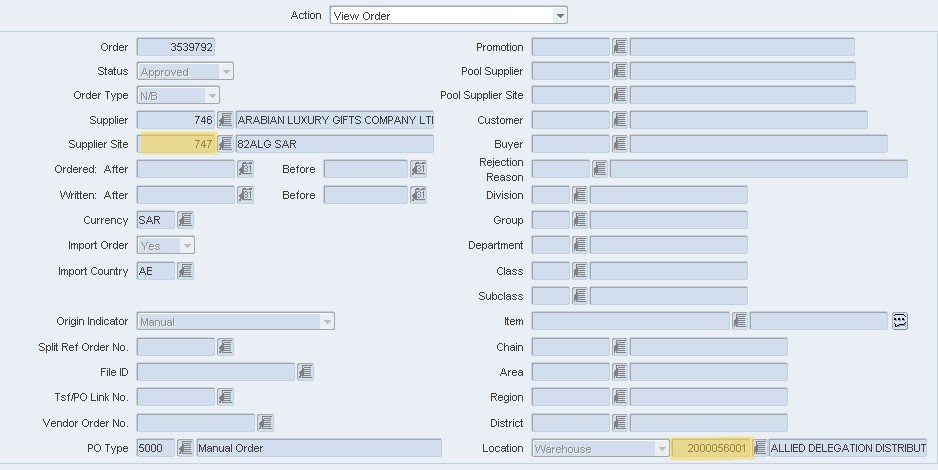
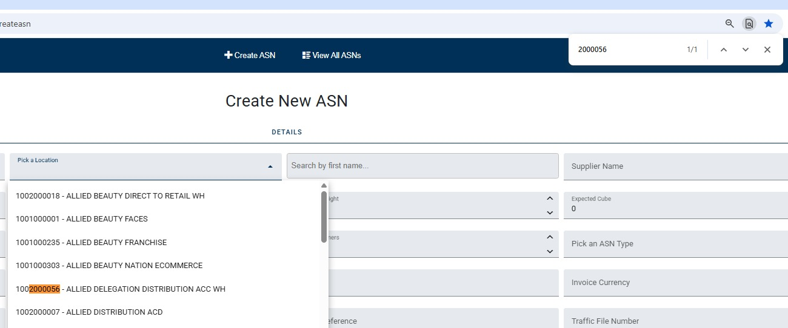

💻 ASN Portal (DIP & MFC Only)
Follow these detailed steps for creating ASNs bound for DIP (Dubai) and MFC
(Riyadh) warehouses.
1. Pre-Processing & Validation (RMS/Oracle)
Before touching the portal, get the PO number from Logitude and enter it into RMS/Oracle
to conduct these checks:
-
Status Check
Ensure the PO is in Approved status. If not, stop and email the BU to request
approval.
-
Location Validation
Verify if the PO is for a Warehouse Location. Store locations do NOT require ASNs.
If you only see store locations, inform the BU for guidance.
-
Intercompany vs. Manual
Determine the PO type:
- Intercompany / Inter-DSO: Process directly in SCE11. Paste
the PO between two percent signs (e.g.,
%PO%) in the External Receipt
section of the ASN tab.
- Manual: Proceed with the ASN Portal steps below.
2. Initial Portal Setup
RMS Data Reference: Most of the header information required in the portal is
sourced directly from RMS. Ensure you have the Supplier Site Number and
Location Number ready as highlighted in the reference image.

-
Facility & Location
Select the facility: DIP (Dubai) or MFC (Riyadh).
Click "Pick a Location", use Ctrl + F to search for the location number from
RMS (Reference image above).
Note: Remove the last three digits of the RMS location number to find the
correct match in the portal dropdown.

-
Supplier Search
Paste the Supplier Site Number (from RMS reference above) into the "Search by First
Name" section of the portal.
-
Headers & Logistics
Fill out the following mandatory fields:
- Weight & Volume: Expected Weight and NO. of Cartons/Pallets.
- ASN Type: Select
5000 - Normal.
- Logistics Details: Traffic File Number (LOG ID), Transportation Mode,
Delivery Terms, Country of Origin, and Port of Loading (Source City).
- Destination: Country of Destination and Port of Discharge (Arrival City).
Click Save once complete.
3. Invoices & PO Selection
-
Supplier Invoice Tab
Navigate to the top tab. Add the Invoice Number, Date, and Value. Click "Add
Invoice" as many times as necessary for multi-invoice shipments.
-
PO Selection Tab
Add the PO numbers and link them to their respective invoices.
4. Item Selection (The "Detail" Level)
Choose your processing method based on your shipment volume:
Option A:
RPA-Validated Route (Recommended)
- Copy the PO, INV, QTY, FULL Price, SKU, and Description from the validated RPA file.
- Perform a Pivot Table in Excel to stop duplicate SKUs.
- Order: PO > SKU > Description > QTY > Unit Price > Invoice.
- Note: Calculate Unit Price by dividing Total Price by Quantity after the
pivot.
- Portal -> Details -> Save Changes -> Import -> Paste -> Confirm.
Option B: Manual
Selection
- PO Item Selection -> Choose POs -> "Get Items".
- Export to Excel to cross-check quantities and values against the invoice SKUs.
- Paste your finalized invoice numbers.
- Portal -> Details -> Save Changes -> Import -> Paste -> Confirm.
🚨 System Glitch Alert: After importing items and saving, the Country of
Destination and Delivery Terms might reset. Check them one last time before clicking
Confirm.
5. Finalization
-
Generation Time
It takes approximately 5-10 minutes to generate the ASN after confirmation.
-
Appointments
- DIP: You can start creating the appointment while the ASN is generating.
- MFC: No appointment is required.
💡 Note on Invoices: Both DIP and MFC allow multiple invoices per ASN unless
specifically requested otherwise by the BU.
📍 Carton-Level ASN: Some DIP shipments require one ASN per carton. This will be
specified in the SAF sheet or via email.